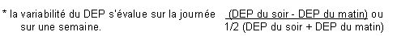

RÉSUMÉ DES CARACTÉRISTIQUES DU PRODUIT
ANSM - Mis à jour le : 29/05/2009
QVAR AUTOHALER 50 microgrammes/dose, solution pour inhalation en flacon pressurisé
2. COMPOSITION QUALITATIVE ET QUANTITATIVE
Dipropionate de béclométasone .......................................................................................... 50 microgrammes
Pour une dose.
Pour la liste complète des excipients, voir rubrique 6.1.
Solution pour inhalation en flacon pressurisé.
4.1. Indications thérapeutiques
Traitement continu anti-inflammatoire de l'asthme persistant *.
* L'asthme persistant se définit par l'existence de symptômes diurnes plurihebdomadaires et/ou de symptômes nocturnes plus de 2 fois par mois.
Remarque: cette spécialité est particulièrement adaptée aux sujets chez qui il a été mis en évidence une mauvaise synchronisation main/poumon nécessaire pour une utilisation correcte des aérosols-doseurs classiques sans chambre d'inhalation.
4.2. Posologie et mode d'administration
Posologie
La posologie est strictement individuelle. La dose initiale sera déterminée selon la sévérité de la maladie et sera ajustée en fonction des résultats individuels. Il convient de toujours rechercher la posologie minimale efficace.
A titre indicatif les posologies initiales préconisées sont:
· Adulte:
o Asthme persistant léger à modéré:
200 à 400 µg en deux prises par jour.
(L'asthme persistant léger se définit par l'existence de symptômes diurnes plus de 1 fois par semaine et moins de 1 fois par jour et/ou de symptômes nocturnes plus de 2 fois par mois, un DEP ou un VEMS supérieur à 80 % des valeurs prédites, une variabilité du DEP* comprise entre 20 et 30 %.
L'asthme persistant modéré se définit par l'existence de symptômes diurnes quotidiens, de crises retentissant sur l'activité et le sommeil, de symptômes d'asthme nocturne plus de 1 fois par semaine, une utilisation quotidienne de bêta-2 mimétiques inhalés d'action brève, un DEP ou un VEMS compris entre 60 et 80 % des valeurs prédites, une variabilité du DEP* supérieure à 30%.)
o Asthme persistant sévère:
800 µg en deux prises par jour.
(L'asthme persistant sévère se définit par l'existence de symptômes permanents, de crises fréquentes, de symptômes d'asthme nocturne fréquents, une activité physique limitée par les symptômes d'asthme, un DEP ou un VEMS inférieur à 60 % des valeurs prédites, une variabilité du DEP* supérieure à 30 %).
* 
· Enfants de plus de 4 ans:
o Asthme léger à modéré: 100 à 200 µg en deux prises par jour.
o Asthme sévère: 300 à 400 µg en deux prises par jour.
Il conviendra de toujours rechercher la dose minimale efficace et d'envisager une décroissance de la dose lorsque le patient est stabilisé.
Mode d'administration
Inhalation par distributeur avec embout buccal (système Autohaler).
Pour une utilisation correcte, il est souhaitable que le médecin s'assure du bon usage de l'appareil par le patient. Une dose de béclométasone est délivrée dans le poumon lorsque le patient inspire profondément par l'embout buccal.
Ce système ne nécessite pas d'agitation avant l'emploi.
Le patient devra:
· enlever le capuchon protecteur de l'embout buccal,
· mettre le levier en position "relevée" en tenant l'appareil droit: embout buccal vers le bas,
· expirer normalement,
immédiatement après, présenter l'embout buccal à l'entrée de la bouche et refermer les lèvres autour de l'embout,
· inspirer lentement et profondément par l'embout buccal,
· maintenir une apnée de quelques secondes,
· entre chaque inhalation, réarmer le système en abaissant puis en relevant le levier.
Après usage, remettre le levier en position abaissée et replacer le capuchon protecteur sur l'embout buccal.
Se rincer la bouche après inhalation du produit.
Par mesure d'hygiène, l'embout buccal doit être nettoyé après utilisation avec un tissu sec et propre. Ne pas utiliser d'eau pour nettoyer le dispositif.
· Intolérance à ce médicament (survenue de toux ou de bronchospasme après inhalation du produit). Dans ce cas il conviendra d'interrompre ce traitement et de prescrire d'autres thérapeutiques ou d'autres formes d'administration.
· Hypersensibilité à l'un des composants.
4.4. Mises en garde spéciales et précautions d'emploi
Mises en garde spéciales
Prévenir le patient que ce médicament n'est pas destiné à juguler une crise d'asthme déclarée, mais est un traitement continu de fond de la maladie asthmatique devant être poursuivi régulièrement, quotidiennement et aux doses prescrites, et dont les effets sur les symptômes de l'asthme ne se feront sentir qu'au bout de quelques jours à quelques semaines.
Si en dépit d'un traitement bien conduit une dyspnée paroxystique survient, on doit avoir recours à un bronchodilatateur bêta-2 mimétique par voie inhalée d'action rapide et de courte durée pour traiter les symptômes aigus. Il conviendra d'en informer le patient et de lui préciser qu'une consultation médicale immédiate est nécessaire si, dans ce cas, le soulagement habituellement obtenu n'est pas rapidement observé après inhalation du bronchodilatateur bêta-2 mimétique.
Si un patient développe en quelques jours une augmentation rapide de sa consommation en bronchodilatateurs bêta-2 mimétiques d'action rapide et de courte durée par voie inhalée, on doit craindre (surtout si les valeurs du débit-mètre de pointe s'abaissent et/ou deviennent irrégulières) une décompensation de sa maladie et la possibilité d'une évolution vers un asthme aigu grave (état de mal asthmatique). Le médecin devra également prévenir le patient de la nécessité dans ce cas, d'une consultation immédiate. La conduite thérapeutique devra alors être réévaluée.
Le patient doit être averti que l'amélioration de son état clinique ne doit pas conduire à une modification de son traitement, en particulier à l'arrêt de la corticothérapie par voie inhalée, sans avis médical.
L'attention des sportifs sera attirée sur le fait que cette spécialité contient un principe actif pouvant induire une réaction positive des tests pratiqués lors des contrôles antidopages.
Précautions particulières d'emploi
En cas d'infection bronchique ou de bronchorrhée abondante, un traitement approprié est nécessaire afin de favoriser la diffusion optimale du produit dans les voies respiratoires.
En cas de déstabilisation de l'asthme, ou de contrôle insuffisant des exacerbations d'asthme malgré des doses maximales de corticoïdes par voie inhalée, un traitement par corticothérapie par voie générale en cure courte doit être envisagé. Il est alors nécessaire de maintenir la corticothérapie inhalée associée au traitement par voie générale.
L'administration conjointe de corticoïdes par voie inhalée chez les asthmatiques sous corticothérapie orale au long cours (patients corticodépendants) ne dispense pas des précautions nécessaires lors d'une réduction des doses de corticoïde par voie orale. Celles-ci seront diminuées très progressivement et le sevrage devra être effectué sous surveillance médicale attentive (à la recherche de l'apparition de signes d'insuffisance surrénale aiguë ou subaiguë) se prolongeant au-delà de l'arrêt de la corticothérapie par voie générale.
4.5. Interactions avec d'autres médicaments et autres formes d'interactions
Sans objet.
Dipropionate de béclométasone:
Chez l'animal, l'expérimentation met en évidence un effet tératogène des corticoïdes variable selon les espèces.
Dans l'espèce humaine, les études épidémiologiques n'ont décelé aucun risque malformatif lié à la prise de corticoïdes lors du premier trimestre bien qu'il existe un passage transplacentaire. Lors de maladies chroniques nécessitant un traitement tout au long de la grossesse, un léger retard de croissance intra-utérin est possible. Une insuffisance surrénale néo-natale a été exceptionnellement observée après corticothérapie à dose élevée par voie systémique.
Il semble justifié d'observer une période de surveillance clinique (poids, diurèse) et biologique du nouveau-né.
Norflurane (Tétrafluoroéthane ou HFA 134a): gaz propulseur
L'étude des fonctions de reproduction menée chez l'animal n'a pas mis en évidence d'effet néfaste de l'administration de Norflurane (Tétrafluoroéthane ou HFA 134a) contenu dans ce médicament. En l'absence d'effet tératogène chez l'animal, un effet malformatif dans l'espèce humaine n'est pas attendu. Il n'existe néanmoins actuellement pas de données pertinentes, ou en nombre suffisant, pour évaluer un éventuel effet malformatif ou fœtotoxique du norflurane lorsqu'il est administré pendant la grossesse.
Dipropionate de béclométasone
Les corticoïdes passent dans le lait.
Norflurane (Tétrafluoroéthane ou HFA 134a): gaz propulseur
Le passage de HFA 134a et de ses métabolites dans le lait n'est pas connu.
4.7. Effets sur l'aptitude à conduire des véhicules et à utiliser des machines
Sans objet.
Effets locaux
· Rarement, possibilité de survenue de candidose oropharyngée. Elle cède le plus souvent spontanément ou à un traitement approprié et il est exceptionnel qu'elle nécessite l'arrêt de la corticothérapie par voie inhalée. Son risque d'apparition augmente avec la dose utilisée et le nombre de prises. Il peut être prévenu par rinçage de la bouche à l'eau après inhalation.
· Possibilité de survenue de gêne pharyngée, de dysphonie, de raucité de la voie, pouvant être prévenus par rinçage de la bouche après inhalation.
· Comme avec d'autres produits inhalés, p ossibilité de survenue de toux et rarement de bronchospasme à la suite de l'inhalation. Dans ce cas, il conviendra d'interrompre le traitement et de prescrire d'autres thérapeutiques ou d'autres formes d'administration.
Effets systémiques
· Ont été décrits avec la corticothérapie par voie inhalée des observations d'amincissement cutané, d'hématomes sous cutanés, de dépression des fonctions surrénaliennes biologiques (diminution du cortisol plasmatique et de la cortisolurie des 24 heures) et de raréfaction du tissu osseux. Les conséquences cliniques d'une administration à long terme notamment sur le tissus osseux et la croissance ne sont pas clairement établies.
L'administration de fortes doses au long cours peut donc nécessiter une surveillance en particulier chez les enfants et les sujets âgés.
En l'état actuel des connaissances, bien que la recherche de la posologie minimale efficace soit toujours recommandée, le risque à considérer en priorité est celui d'un contrôle insuffisant de l'asthme et devra toujours être pesé face à celui du retentissement systémique.
· Rarement possibilité de survenue d'œdèmes localisés (visage, bouche, région péri-orbitaire) et plus rarement d'angiœdème à la suite de l'inhalation. Dans ce cas, il conviendra d'interrompre le traitement.
L'emploi de ce médicament à des doses très supérieures aux doses recommandées est le reflet d'une aggravation de l'affection respiratoire nécessitant une consultation rapide pour réévaluation thérapeutique.
5. PROPRIETES PHARMACOLOGIQUES
5.1. Propriétés pharmacodynamiques
GLUCOCORTICOIDES PAR VOIE INHALEE
Code ATC: R03BA01
Le dipropionate de béclométasone est un glucocorticoide de synthèse. Administré par voie inhalée, il exerce un effet anti-inflammatoire essentiellement local.
Dans cette spécialité le dipropionate de béclométasone est en solution dans les excipients. Le diamètre médian aérodynamique massique (MMAD) des particules libérées est de l'ordre de 0,95 µm (pour une dose délivrée de 50 µg). Une étude de déposition pulmonaire (dipropionate de béclométasone marqué au TC99) réalisée chez 16 asthmatiques légers a mis en évidence une distribution du principe actif à l'ensemble de l'arbre bronchique de l'ordre de 40 % de la dose administrée à l'aide de du dispositif aérosol doseur classique. La quantité de principe actif déposée dans l'oropharynx était de l'ordre de 19 % de la dose administrée.
Les études comparatives chez l'enfant et chez l'adulte ont mis en évidence des concentrations plasmatiques moyennes (aires sous la courbe) de 17-BMP (métabolite actif du dipropionate de béclométasone) environ 2,5 fois plus élevées que celles mesurées après une dose identique de dipropionate de béclométasone en suspension CFC traduisant un passage systémique 2,5 fois plus important.
Ces données peuvent expliquer que, au cours des essais cliniques, une efficacité du même ordre a pu être observée avec des doses de béclométasone 2 à 2,5 fois inférieures à celles d'un traitement comparateur avec un dispositif en flacon pressurisé formulé avec des CFC et délivrant un aérosol de particules de tailles supérieures.
Les études pharmacodynamiques comparatives ont mis en évidence une baisse de la cortisolurie des 24 heures équivalente après inhalation d'une dose quotidienne de 800 µg de béclométasone en solution dans HFA134a administrée avec cette spécialité et après inhalation d'une même dose quotidienne de 800 µg de dipropionate de béclométasone en suspension en flacon pressurisé formulée avec des CFC et administrée à l'aide d'un dispositif délivrant un aérosol de particules de tailles supérieures.
5.2. Propriétés pharmacocinétiques
Une partie de la dose administrée, dépendant largement d'une correcte utilisation de l'appareil, est déglutie et éliminée par les fécès. L'autre pénètre dans les bronches où elle exerce ses effets, puis passe dans la circulation générale.
Les taux sériques de béclométasone totale (dipropionate de béclométasone (DPB), monopropionates de béclométasone (17-MPB et 21-MPB) et béclométasone inactive (BOH)) mesuré à partir des prélèvements sanguins après hydrolyse in vitro de 17-MPB, 21-MPB et DPB en BOH, a mis en évidence une concentration plasmatique maximale de béclométasone totale après environ 30 minutes. Après inhalation d'une dose de 800 µg, le taux sérique maximal atteint est en moyenne de 2 ng/ml.
Les études menées chez l'enfant ont montré que la concentration plasmatique maximale chez l'enfant est légèrement plus élevée (environ 10%) que chez l'adulte, avec une élimination plus rapide et une augmentation de la clairance totale chez l'enfant.
Les études cinétiques comparatives ont mis e n évidence, chez l'adulte et chez l'enfant, des concentrations plasmatiques moyennes de béclométasone totale du même ordre après inhalation de 200 µg de béclométasone et après inhalation d'une dose de 400 µg de dipropionate de béclométasone formulé avec des CFC et administrée à l'aide d'un dispositif délivrant un aérosol de particules de tailles supérieures.
Le dipropionate de béclométasone est métabolisé dans le foie en monopropionate de béclométasone et en béclométasone inactive, puis est excrété sous forme de métabolites dans la bile et les urines.
Le dipropionate de béclométasone et ses métabolites sont essentiellement éliminés par voie fécale. Entre 10% et 15% de la dose administrée sont éliminés dans les urines, sous forme de métabolites libres et conjugués.
Norflurane (Tétrafluoroéthane ou HFA 134a): gaz propulseur
Après inhalation d'une bouffée, l'absorption de HFA 134a est très faible et rapide, la concentration maximale est atteinte en moins de 6 minutes. Un très faible métabolisme hépatique avec formation d'acide trifluoroacétique et trifluoroacétaldéhylde a été mis en évidence chez l'animal (souris et rats).
5.3. Données de sécurité préclinique
Sans objet.
Gaz de pressurisation: tétrafluoroéthane (HFA-134a).
Sans objet.
3 ans.
6.4. Précautions particulières de conservation
Récipient sous pression: à protéger des rayons du soleil et à ne pas exposer à une température supérieure à 50°C. Ne pas percer ou brûler même après usage.
6.5. Nature et contenu de l'emballage extérieur
100 doses ou 200 doses en flacon pressurisé (Aluminium) de 10 ml muni d'une valve doseuse et d'un embout buccal (Système Autohaler).
6.6. Précautions particulières d’élimination et de manipulation
Lire attentivement la notice avant usage.
7. TITULAIRE DE L’AUTORISATION DE MISE SUR LE MARCHE
TEVA SANTE
Le Palatin 1
1, cours du Triangle
92936 PARIS LA DEFENSE Cedex
8. NUMERO(S) D’AUTORISATION DE MISE SUR LE MARCHE
· 351 609-8:; 100 doses en flacon pressurisé (Aluminium).
· 351 610-6:; 200 doses en flacon pressurisé (Aluminium).
9. DATE DE PREMIERE AUTORISATION/DE RENOUVELLEMENT DE L’AUTORISATION
[à compléter par le titulaire]
10. DATE DE MISE A JOUR DU TEXTE
[à compléter par le titulaire]
Sans objet.
12. INSTRUCTIONS POUR LA PREPARATION DES RADIOPHARMACEUTIQUES
Sans objet.
Liste I.